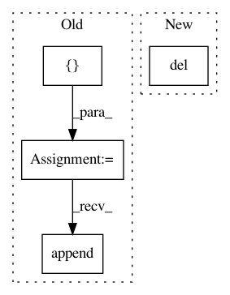

16f50016cabab22efde6f183c89efe0a11b0c683,src/RMDL_Image.py,,image_classifciation,#,22
Before Change
def image_classifciation(X_train, y_train, X_test, y_test, batch_size, shape, sparse_categorical, Random_Deep,
n_epochs):
y_proba = []
model = []
score = []
history_ = []
number_of_classes = np.max(y_train)+1
//X_train, y_train, X_test, y_test, shape, number_of_classes = Image_Data_load.load(Data_Image)
i =0
while i < Random_Deep[0]:
try:
print("MNIST DNN ", i, "\n")
model.append(Sequential())
model[i], model_tmp = BuildModel.buildModel_DNN_image(shape, number_of_classes, 0)
filepath = "weights\weights_DNN_" + str(i) + ".hdf5"
checkpoint = ModelCheckpoint(filepath, monitor="val_acc", verbose=1, save_best_only=True,
mode="max")
callbacks_list = [checkpoint]
history = model[i].fit(X_train, y_train, validation_data=(X_test, y_test),
epochs=n_epochs[0], batch_size=batch_size, callbacks=callbacks_list,
verbose=2)
history_.append(history)
model_tmp.load_weights(filepath)
if sparse_categorical == 0:
model_tmp.compile(loss="sparse_categorical_crossentropy",
optimizer="adam",
metrics=["accuracy"])
else:
model_tmp.compile(loss="categorical_crossentropy",
optimizer="adam",
metrics=["accuracy"])
y_pr = model_tmp.predict_classes(X_test, batch_size=batch_size)
y_proba.append(np.array(y_pr))
score.append(accuracy_score(y_test, y_pr))
i = i + 1
except:
print("Error in model ", i, " try to re-generate an other model")
i =0
while i < Random_Deep[1]:
try:
print("RNN ", i, "\n")
model.append(Sequential())
model[i], model_tmp = BuildModel.Image_model_RNN(number_of_classes, shape)
filepath = "weights\weights_RNN_" + str(i) + ".hdf5"
checkpoint = ModelCheckpoint(filepath, monitor="val_acc", verbose=1, save_best_only=True,
After Change
y_proba.append(np.array(y_pr))
score.append(accuracy_score(y_test, y_pr))
i = i+1
del model_tmp
del model_CNN
gc.collect()
In pattern: SUPERPATTERN
Frequency: 3
Non-data size: 4
Instances
Project Name: kk7nc/RMDL
Commit Name: 16f50016cabab22efde6f183c89efe0a11b0c683
Time: 2018-03-07
Author: kk7nc@virginia.edu
File Name: src/RMDL_Image.py
Class Name:
Method Name: image_classifciation
Project Name: dirty-cat/dirty_cat
Commit Name: 6d27fa90fd962caf3d61c8e20550694818491096
Time: 2018-11-16
Author: gael.varoquaux@normalesup.org
File Name: dirty_cat/similarity_encoder.py
Class Name:
Method Name: ngram_similarity
Project Name: SheffieldML/GPy
Commit Name: 0abb9b835ffeb020410bdf9a1e0532139ffa5cfc
Time: 2016-08-16
Author: ibinbei@gmail.com
File Name: GPy/kern/src/add.py
Class Name: Add
Method Name: __init__